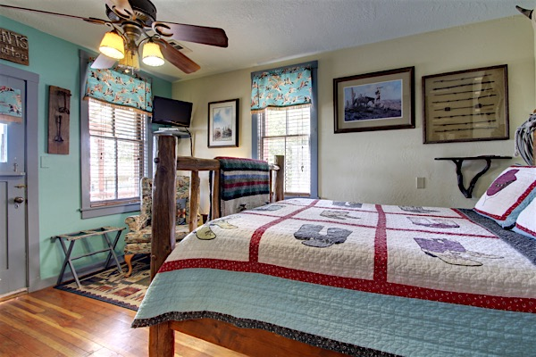
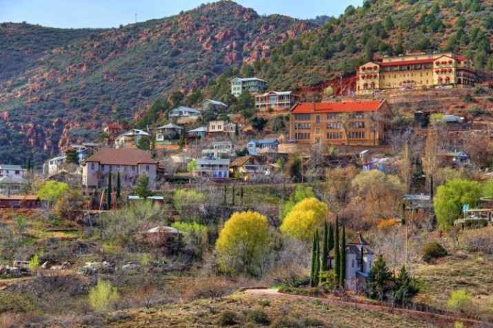

Ghost City Inn was built in the 1890s as
a boarding house for miners, but was later used for a variety of things, such as an ashram and a restaurant.
It is home to a female spirit that is most often seen in the Cleopatra Hill Home. There are also claims of a
male spirit lurking through the halls. In addition to these sightings, you may also hear doors slamming, and
strange voices when you are in a room alone.

There are many other things you can do in Jerome when
you feel you've been cooped up in your room. In this ghost town, there's never a
dull moment! Here's a list of activities in the area:
Visit the Tuzigoot National Monument if you are interested in the historical sights.
Nature lovers can spend a day in the Dead Horse Ranch State Park.
View the Raku Gallery if you are a fan of art.
Hike the Mingus Mountain if you're looking to be more active.

Contact the Panda Travel Agency for more information on this vacation spot
and other spooky destinations!
Panda Travel Agency
555-905-1982
info@pandatravel.org More info!
Ghostly Reviews
"My wife and I just returned from our 4 night stay at the Ghost City Inn...The room was
clean and comfortable. I found the bathroom, albeit clean, to be a bit spooky. Once, for no reason at all, the hair on the back
of my neck stood up and I had the feeling someone or something was with me...I would highly recommend The Ghost City Inn to anyone
traveling in central Arizona."
"You could not ask for a better hostess than Jackie Muma. She is great as is her cooking, the inn and the view.
I recommend this B&B, as long as you don't mind a few uninvited guests joining you. Don't worry, they're harmless and they
leave you alone. It is worth the 158 curves in 12 miles to get to Jerome and when you do, make sure you stay at the Ghost City Inn."
"My room was very creepy, yet, ironically, it was very comfortable! I had a few spooks, but nothing too traumatic. I would
definitely go back and recommend it to anyone staying in the area. Don't stay anywhere but The Ghost City Inn!"